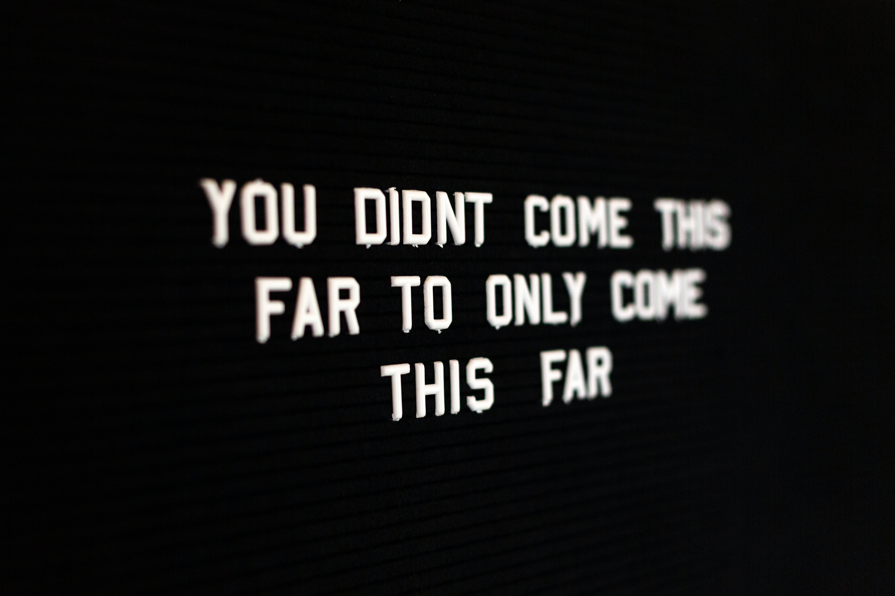

What is "Still Not Finished"
Addiction, incarceration, mental health, suicide... All of these things isolate us, we either push away loved ones and friends or are taken away from them. We lose the support that can help see us through the hard times or maybe we didn't have it to begin with. When suffering with these issues it is hard if not impossible to see the way through them. But there is a way through and reaching it is possible, but maybe you don't know the path. This is a place to help you find that path. Through the guidance, support, and encouragement of those that have walked that path, you can too.
If you have overcame the darkness of addiction, PTSD, depression, judicial involvement, suicide or other forms of trauma, please take some time to share with others how you did it and what helps you maintain it. After signing up you will be able to sign in to share your inspiration!